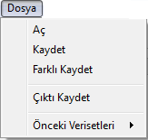

Dosya Menüsü
Dosya Menüsü:
Bu menünün altında bulunan kısımlarda genel olarak dosya açmak, aktif verisetini kaydetmek,
farklı kaydetmek, önceki veri setlerini görüntülemek gibi seçenekler mevcut.

Aç: Bu altmenüyle, yeni bir veriseti yükleme işlemi gerçekleştirilir.
Kaydet: Bu altmenüyle, üzerinde değişiklik yapılmış veriseti dosyaya kaydedilir.
Farklı Kaydet: Bu altmenüyle, veriseti yüklendiği halinden farklı bir dosya formatı
şeklinde (txt, csv, excel) kaydedilebilir.
Önceki Verisetleri: Bu altmenüyle, daha önceki çalışmalar sırasında açılmış verisetleri
bulunur ve hızlıca tekrar açılabilir.